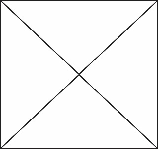

|

|
Profile Name
Nurhaliza Vania Akbariani
2, Hiu Street
Mampang Indah I
Depok, Indonesia
Email: nurh21195si@gmail.com
Telephone: 0878 7116 2210
|
Categories
Nama
Alamat
Domisili
Kontak
|
Perkenalkan nama saya Nurhaliza Vania Akbariani. saya lulusan SMKN 2 Depok jurusan Tata Busana,
dan sekarang saya melanjutkan pendidikan di STT Nurul Fikri prodi Sistem Informasi.
Saya tertarik dengan prodi sistem informasi, karena melihat perkembangan teknologi semakin pesat
dan banyaknya kebutuhan teknologi dalam kehidupan.
Impian saya kedepan ingin menjadi designer yang ahli dibidang IT. Bukan hanya dapat mendesign dan membuat pola baju,
tetapi dapat juga membuat rancangan baju dan mengembangkan produk dengan sistem teknologi.